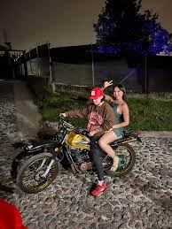

Encabezado de la pagina web
WESCOLT DETRAS DE WESCOLT
Luis Villa, más conocido como 'Westcol' ha estado involucrado en varias polémicas por sus comentarios homofóbicos. Es creador de contenido de la plataforma 'Twitch', en donde realiza varias transmisiones 'envivo'. Allí habla de ciertos aspectos de su vida y también muestra cómo se entretiene con los diferentes videojuegos. En su canal de Youtube, en donde tiene más de 400.000 suscriptores, sube diferentes 'clips' con sus amigos haciendo bromas y retos. Asimismo, tiene un espacio en donde le responde a sus seguidores todas las dudas que tiene de él. Su fama se dio por la plataforma 'streaming' y sus peculiares videos que entretienen a más de uno. LE PUEDE INTERESAR Westcol es criticado por su opinión sobre la comunidad LGBTIQ+: "lo enciendo a "balín". Tiene cerca de 25 y años y fue novio de la influencer, Aida Victoria Merlano. Su relación la hizo oficial, sin embargo, lo criticaban a diario por sus comentarios y las vivencias que tenía con ella. Tiempo después, se confirmó que la parejita ya no se encuentra en una relación. Tras hecho, todo empezó a 'explotar'. Durante los videos que hace en 'Twitch' dio su opinión sobre la comunidad LGBTIQ+ y lo trataron de homofóbico. Alguien le preguntó sobre qué pasaría si un 'gay' lleva a su casa a alguien del mismo género y su respuesta le dio la vuelta al mundo. "No papi, eso sí no va conmigo... WestCol es un homofóbico, cero perro, que haga sus m... y que el hijue... sea cacorro, pero que n0 me traiga otro man acá ni por el pu...", dijo. Adicionalmente, este comentario no quedó ahí, ya que aseguró que podría dispararle a alguien homosexual: "lo fulmino a balazos". LE PUEDE INTERESAR Exnovia de Westcol también es influencer y la comparan con Aida Victoria. Westcol y Aida Victoria Merlano Los influencers se dejaron ver por un par de meses en el 2022. Los tortolitos se la pasaban de arriba para abajo, pero un día no los volvieron a ver juntos y más de uno se preguntó qué pasó. Tiempo después, el mismo Westcol confirmó la ruptura de este par. "Fue una decisión que tomamos, ni siquiera porque tuviéramos a alguien más, sino porque empezamos a charlar en un momento en el que los dos estábamos en un peak”. Asimismo, aclaró que no se trató de unos 'cachos'. En unas declaraciones, se fue con toda y dijo que hay personas que inventan mucha historia falsa. "Es la gente la que se inventa unas vainas que nada que ver. Es que la gente piensa que uno con todas las mujeres le va a ser infiel”, expresó
Ejemplos Flexbox

